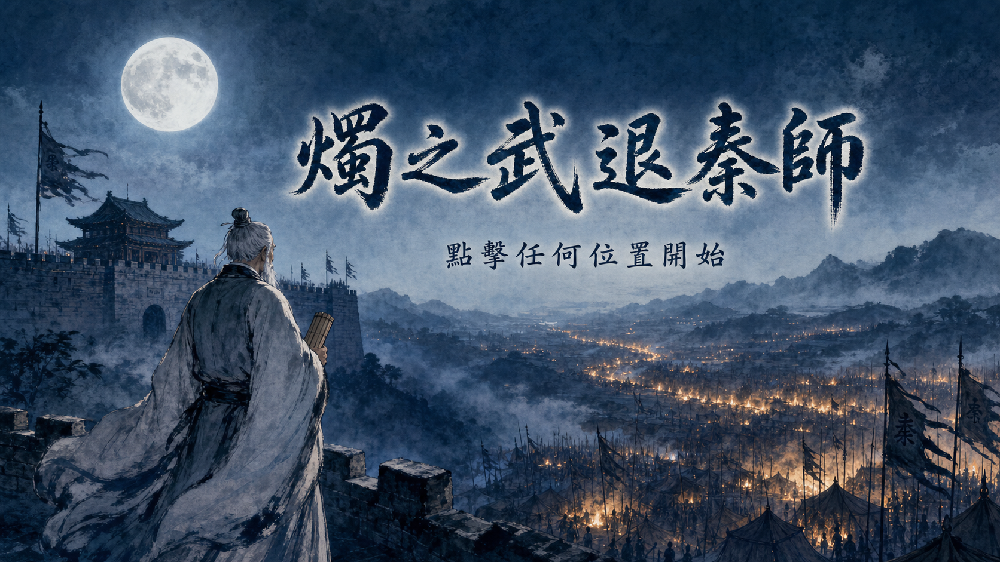

🎮 自己玩／交作業
用 localStorage 就好，資料留在自己的瀏覽器；不必建立雲端後台。
教師 AI 程式課 · 提示詞、任務包、圖文教學與 Codex Skill
一頁打包 · 點按鈕就能複製📦 這是可以隨時回來找的資料整理包：先選上方分類，再複製或下載你現在需要的內容。
2026.09.26 更新｜已同步 Codex 講義的 22 段精簡提示詞。
一次複製現在需要的那一段，先替換［中括號］。接續步驟留在同一個任務；沒有要設定的項目可刪除。
遊戲練習先在 Codex 開啟桌面的「我的小遊戲」。下列作品各放在自己的子資料夾，三款示範和地圖必須同層：
桌面／我的小遊戲／ ├─ AI 能做什麼／index.html ├─ 示範1_朝代配對／index.html ├─ 示範2_成語填字／index.html ├─ 示範3_打怪RPG／index.html └─ 大冒險地圖／index.html
貪吃蛇、踩地雷、打地鼠與轉蛋機是額外練習，也各放在「我的小遊戲」下。作品標題可以改，提示詞裡前後對應的資料夾名稱要保持一致。
先連接信箱，再設定排程。Skill 要在流程成功後儲存，下次才用名稱呼叫。
請連接我的［Gmail／Outlook Email，擇一］信箱。需要安裝、登入或授權時，請引導我完成。 連線後只讀取資料，回報帳號及今天收件匣、垃圾郵件各收到幾封；不要更動或寄送郵件。
建立每天 20:00（台北時間）的「每日信箱整理」排程，依帳號分開，以繁體中文回報。 1. 完整檢查收件匣與垃圾郵件，讀完所有分頁；先看摘要，資訊不足再讀全文。 2. 依內容分為：緊急、待回覆／處理、重要資訊、一般參考、明確垃圾；不要因位於垃圾郵件匣就忽略。 3. 將垃圾郵件匣內疑似重要的信移回收件匣，報告列出「從垃圾郵件救回」。 4. 僅將高度確定無保留價值的詐騙、惡意或大量垃圾廣告、無行動價值的重複通知移至可復原垃圾桶。 5. 涉及金錢、帳號安全、期限、工作／學校、合約／政府、醫療／預約、旅行、訂單／物流、會員權益、重要附件、真人來信或待回覆內容，一律保留；不確定也保留並註明。 6. 不永久刪除、清空垃圾桶、取消訂閱、封鎖、回覆、轉寄或寄信；工具無法安全判斷或操作時，維持原狀並說明。 建立後回報名稱與時間，將此任務釘選；無法代辦時告訴我操作方式。
$skill-creator 把剛才成功的流程、判斷規則與驗收標準存成 Skill，告訴我名稱與呼叫方式。
$［剛剛建立的 Skill 名稱］ 請按照流程規則執行操作。
在目前專案建立「AI 能做什麼/index.html」，做一頁 Codex 自我介紹。 介紹目前可用的主要能力，包含繪圖、排程、Skills 與 Plugins；各配一個教師工作例子，再給 3～5 個溝通建議。尚未連接的功能請註明。 風格友善清楚，深色背景配溫暖重點色。完成後用 Windows 直接開啟「AI 能做什麼/index.html」。
【關於我與回答方式】 我是［職業／教學對象］，常請 AI 協助［工作內容］。 請用繁體中文，回答方式與格式偏好［例如：先說結論、步驟清楚、提供可直接使用的範例］。 請注意或避免［例如：不要猜測資料、少用專有名詞］。 【製作教材與作品時】 製作教材、簡報、網頁或遊戲時，需要插圖就用繪圖模型製作，存進專案並實際套用；不以 emoji、色塊或佔位圖代替。 預設使用［彩色鉛筆／水彩／兒童繪本，擇一］風格，整套角色、線條、材質與配色一致；風格不確定時先問我。 短標題、圖卡文字與漫畫對白可畫進圖片，用繁體中文並檢查錯漏字；長文、常修改或需精確複製的內容保留可編輯文字，不確定時先問我。 填寫提醒： 沒有要設定的項目就刪除；不要放入個資、密碼或其他機密。
RPG 題庫用 CSV 網址或專案檔案，兩種方式擇一。先確認題目與答案，再製作下方的打怪 RPG。
把這份題庫整理成 Markdown 表格，每列一題，欄位固定為：題目｜A｜B｜C｜D。A 放原題的正確答案，B、C、D 放三個錯誤選項。 不要加題號或分節。缺少選項、答案不明或讀不清楚的題目，另列待確認清單，不要猜答案或用「空」充當選項。
請讀取題庫 CSV：［貼上 CSV 網址］。 整理題目，回報欄位、題數，以及題目、四個選項、正確答案的缺漏或錯誤。 這一步先備妥題庫，下一步才製作「示範3_打怪RPG」；有疑義先標註，不要猜答案。
請讀取「我的小遊戲」專案裡的題庫：［填入檔名，含副檔名］。 整理題目，回報欄位、題數，以及題目、四個選項、正確答案的缺漏或錯誤。 這一步先備妥題庫，下一步才製作「示範3_打怪RPG」；有疑義先標註，不要猜答案。
依目前專案的「［教材檔名.pdf］」出 20 題四選一：簡單 6 題、中等 10 題、困難 4 題。 輸出學生卷、附答案／解析／教材依據的教師卷，以及可編輯題庫試算表。 先預覽成品，逐頁檢查排版與內容，再開啟給我驗收。
在桌面「我的小遊戲」建立「貪吃蛇/index.html」，製作經典貪吃蛇。 方向鍵控制移動；吃食物變長並加 10 分，撞牆或撞到自己就結束。右上角顯示分數，結束顯示最終分數與「重新開始」。手機提供觸控操作。 採深色背景、亮綠蛇與紅色食物，介面簡潔、有圓角。用繪圖模型製作並套用一致的角色與食物素材，放在這個遊戲的 assets/images，不用 emoji 當最終美術。 測試移動、計分、碰撞與重玩，再用 Windows 開啟作品。
在桌面「我的小遊戲」建立「踩地雷/index.html」。盤面 9×9，隨機放 10 顆地雷；左鍵翻格、右鍵插旗，手機也要能翻格與標記。 翻開安全格顯示周圍地雷數量，沒有相鄰地雷就展開空白區；踩雷結束，翻完所有安全格即過關。上方顯示剩餘地雷數、計時與「重新開始」。 採乾淨的深色介面，數字 1～8 用不同顏色。用繪圖模型製作地雷、旗幟與爆炸素材，存入這個遊戲的 assets/images 並套用，不用 emoji 當最終美術。 測試翻格、插旗、勝負與重玩，再用 Windows 開啟作品。
在桌面「我的小遊戲」建立「打地鼠/index.html」。3×3 共九個洞，地鼠隨機冒出，1.5 秒後縮回；點中加 10 分並立即消失，漏打不扣分，點空洞扣 5 分。 每局 30 秒，顯示分數與倒數，結束顯示最終分數及「重新開始」，滑鼠與手機都能玩。 用繪圖模型製作可愛手繪地鼠與洞口，存入這個遊戲的 assets/images 並套用，加入冒出、縮回動畫，不用 emoji 當角色。 測試計時、計分、連點與重玩，再用 Windows 開啟作品。
先完成對應的小遊戲，再使用美術升級提示詞。
升級目前專案的「［作品資料夾］/index.html」，保留玩法與資料，只改善美術和操作回饋。 風格：［填入風格］；配色：［主色＋輔色］。需要的角色、場景與圖示請用繪圖模型製作，存入作品的 assets/images 並套用，不用 emoji 當最終美術。 統一字體、按鈕與畫面；操作、得分、成功及失敗加入適量動畫、粒子與音效，避免效果遮住內容或妨礙操作。 測試電腦與手機，確認功能照常運作，再用 Windows 開啟作品。
升級桌面「我的小遊戲/貪吃蛇/index.html」，保留原有玩法和計分。 改成賽博龐克霓虹風：黑底搭粉紅、藍、綠；蛇身漸層並有光尾，食物脈動發光。吃到食物時分數跳動、蛇身閃亮並散出星星；結束時輕震、慢慢淡出。搭配科幻字體與操作、進食、結束音效。 需要重畫的角色或食物用繪圖模型製作，存入遊戲的 assets/images 並套用，不以 emoji 取代。測試電腦與手機操作，再用 Windows 開啟作品。
升級桌面「我的小遊戲/踩地雷/index.html」，保留 9×9、十顆地雷及原有規則。 改成淺色簡約介面，搭配一個重點色；數字 1～8 用不同馬卡龍色。翻格有立體翻轉、插旗輕彈，踩雷時盤面閃紅並輕震，過關灑星星與煙火；各動作搭配簡短音效。 需要的旗幟、地雷或裝飾圖請用繪圖模型製作，存入遊戲的 assets/images 並套用，不用 emoji 當最終美術。確認動畫不擋操作，測試電腦與手機，再用 Windows 開啟作品。
升級桌面「我的小遊戲/打地鼠/index.html」，保留原有時長與加減分規則。 改成日式溫暖手繪風、米黃背景與木紋洞口；用繪圖模型製作一致的地鼠與場景，存入遊戲的 assets/images 並套用，不用 emoji 當角色。 地鼠冒出時彈跳配「啵」聲；打中時旋轉縮回、跳出「+10」並散出粒子，點空洞顯示「-5」並輕震。連中三次以上顯示「COMBO ×N」與特效，但不改分數；最後五秒紅色提醒並有滴答聲。 測試電腦與手機的計分、倒數及重玩，再用 Windows 開啟作品。
我是［身分］，想解決［問題或任務］，請做一個［作品類型］，給［對象與情境］使用。 主要功能：［功能一］、［功能二］。 風格與互動：［描述想要的感覺］。 請在目前專案建立「［作品資料夾］/index.html」。需要角色、插圖或場景時，用繪圖模型製作並存入作品的 assets/images，實際套用，不用 emoji 當最終美術。 完成後測試主要流程與電腦、手機畫面，再用 Windows 開啟給我看。
三款示範完成後，才接大冒險地圖。打怪 RPG 使用前面已確認的題庫。
在「我的小遊戲」專案建立「示範1_朝代配對/index.html」，做給國中生玩的「古今對對碰」。 左側是秦、漢、唐、宋、明、清；每朝準備 2～3 個正確的代表事件，右側事件卡隨機排列。把事件拖到朝代：答對鎖定並蓋紅章，答錯提示並退回；全配對後顯示過關，可重新開始。 用繪圖模型製作彩鉛淡水彩的古代中國地圖背景、六朝插圖與標題牌；事件卡像小卷軸。圖片放在這個遊戲的 assets/images 並實際套用，整套畫風一致；繁體中文字清楚、正確。 測試電腦與手機拖曳，再用 Windows 直接開啟「示範1_朝代配對/index.html」。
在「我的小遊戲」專案建立「示範2_成語填字/index.html」，做給國中生玩的「成語填字」。 準備 10 個常見成語，每題挖空兩字，搭配隨機排列的正解與干擾字卡。拖字填空：答對鎖定並蓋紅章，答錯提示並退回；填完顯示完整成語與解釋。每次抽 5 題，結束顯示成績，可重新開始。 用繪圖模型製作彩鉛淡水彩的古代書齋背景、文房四寶、卷軸、印章與標題牌。字卡像手寫紙片、空格像米字格；圖片放在這個遊戲的 assets/images 並實際套用，畫風一致，繁體中文正確。 測試電腦與手機拖曳，再用 Windows 直接開啟「示範2_成語填字/index.html」。
在「我的小遊戲」專案建立「示範3_打怪RPG/index.html」，用剛才確認的題庫做國中生的「勇者試煉」。至少 20 題四選一；若來源未提供、題數不足或答案不明，先告訴我，不要自行補題。 玩家是 100 HP 的魔法師，依序挑戰野狼、毒蠍、惡鬼、巨龍、魔王。答對攻擊並賺金幣，答錯扣血並顯示正解；每關後可到商店買回血藥水、攻擊水晶、復活符。五關後顯示成績，失敗可重試。 用繪圖模型先定角色設定，再做同套彩鉛奇幻風的魔法師、五隻怪物、森林、木造商店、三種道具與標題牌，可愛不血腥。 素材存入這個遊戲的 assets：去背角色放 characters、場景放 backgrounds、道具放 items，並實際套用；題目與數值保留可編輯文字，繁體中文正確。 測試電腦與手機操作，再用 Windows 直接開啟「示範3_打怪RPG/index.html」。
我是國小英文老師，想做「單字冒險挑戰」，讓學生反覆練習容易忘記的單字。 題庫在目前專案的「［題庫檔名］」。請幫我寫一段簡短、可直接製作的提示詞，說清楚玩法、畫風與完成標準；先讓我看提示詞。
在「我的小遊戲」專案建立「大冒險地圖/index.html」，串起同層的三款遊戲： - 示範1_朝代配對/index.html → 朝代之印 - 示範2_成語填字/index.html → 成語之印 - 示範3_打怪RPG/index.html → 勇者之印 地圖顯示關卡名稱、完成狀態、持有 X／3 印與「清除進度」，三款遊戲都加「回到大地圖」。先檢查各遊戲的通關紀錄，缺少就補上；只有真的過關才給印，返回或重新整理仍保留進度。 「通關大門」隨時可開：上方有朝代、成語、勇者三個凹槽，下方是持有的印章。拖對鎖定變綠，拖錯提示並退回；三印全放對才通關。通關顯示從冒險開始計算的總時間與「再次冒險」。清除或重玩只重設本冒險的進度、計時與封面紀錄。 入口用單一 HTML，不依賴外部套件；沿用現有美術。測試電腦與手機拖曳、三關往返與跨頁存檔。用同一個本機網站預覽整套作品，再用 Windows 在外部瀏覽器開啟地圖。
依序完成地圖美術、封面、結局規劃；確認規劃後，才貼「製作結局」。新版前兩段已包含圖片套用，不需要再貼舊版整合指令。
在「我的小遊戲」專案修改「大冒險地圖/index.html」，升級地圖美術，保留原有玩法。 用繪圖模型畫橫式 16:9 地圖，風格為［填入一種風格，例如：彩鉛水彩繪本］，存成「大冒險地圖/map-bg.png」。 四周放朝代配對、成語填字、打怪 RPG 三個地標，中央是三印大門；地標以符合畫風的路線連接，各取合適地名並畫上繁體中文名牌。 底圖完整顯示、不裁切。依圖片名牌位置設定可點區域與滑過亮起效果，連到原有三關和大門；不要重疊兩套按鈕。完成標記不遮字，右上角只留一組持有印章數與清除進度。 確認手機縮放後仍點得到正確地點，原有背包拖印、開門、通關與重玩都正常，再用 Windows 在外部瀏覽器開啟本機地圖。
在「我的小遊戲」專案修改「大冒險地圖/index.html」，加入開場封面。 用繪圖模型沿用 map-bg.png 的畫風，畫橫式 16:9、具英雄輪廓與神秘冒險感的封面，存成「大冒險地圖/cover.png」。取一個符合世界觀的故事名稱，畫在中央，副標是「點擊任何部位遊戲開始」；檢查繁體中文字，不更改資料夾名稱。 首次開啟或重新整理時全螢幕顯示封面，點擊任意位置淡出到地圖；從關卡返回時直接回地圖。「再次冒險」只重設本冒險的紀錄並重播封面，保留既有玩法。 測試電腦與手機的封面、闖關、返回與重玩，再用 Windows 在外部瀏覽器開啟本機地圖。
閱讀「我的小遊戲」中的大冒險地圖與三款遊戲，規劃三印開門後的五幕結局。 先只交規劃表，不改程式、不生圖、不建素材，等我確認再做。 表格列出每幕的劇情作用、畫面與構圖、角色動作表情、旁白／對白、檔名。故事要承接通關、有起承轉合；沿用角色與畫風，沒有時再建議手繪風格。 固定五張 16:9 圖，預定存為「大冒險地圖/ending-01.png」～「ending-05.png」。繁體中文簡短、有韻味、不說教；要畫進圖片的文字請逐字列出。 表格後用一句話摘要結局，簡述五幕如何串連，以及角色、服裝、道具、線條、材質、配色的一致設定。確認後請用繪圖模型製作並接上結局。
規劃沒問題，請製作五張圖並接上大冒險地圖的結局，測試後開啟給我看。
這段用來升級既有轉蛋機。先備妥「我的小遊戲／轉蛋機／index.html」，再準備圖片並套入；三款課堂示範不會自動變成轉蛋機。
我要升級桌面「我的小遊戲/轉蛋機/index.html」的既有轉蛋遊戲，請用繪圖模型製作以下八張素材，先不改程式。若還沒有這款遊戲，先告訴我需準備既有轉蛋機作品。 八張圖都用一致的暖色、Q 版扁平插畫風，獨立透明背景 PNG，存入「轉蛋機/images」： 1. machine.png：正面復古橘色機台，透明圓頂裝滿膠囊、木質機身、金屬把手與投幣孔。 2. capsules.png：紅橘黃綠藍紫六顆膠囊橫排，透明上半、彩色下半，6:1。 3. prize-n.png：白色禮物盒、米色蝴蝶結，標示 N。 4. prize-r.png：綠色禮物盒、金色蝴蝶結，標示 R。 5. prize-sr.png：藍色禮物盒、金色蝴蝶結與寶石，標示 SR。 6. prize-ssr.png：紫色禮物盒、金色蝴蝶結與星光，標示 SSR。 7. prize-ur.png：金色禮物盒、桂冠、王冠與金光，標示 UR。 8. sparkle.png：金色彩帶、星星與慶祝光芒，供 SSR／UR 中獎使用。 五個禮物盒保持同款造型。檢查檔名、透明背景與盒身文字；目前無法生圖時，再提供可交給繪圖工具的八段提示詞。

機台

6 色膠囊

慶祝特效

N 普通

R 不錯

SR 稀有

SSR 史詩

UR 傳說
請修改桌面「我的小遊戲/轉蛋機/index.html」的既有轉蛋遊戲；若遊戲或素材缺少，先列出缺項。 八張透明 PNG 已放在「轉蛋機/images」：machine.png 是機台；capsules.png 是橫排六色膠囊；prize-n.png、prize-r.png、prize-sr.png、prize-ssr.png、prize-ur.png 是五級禮物；sparkle.png 用於 SSR／UR 慶祝。 將圖片實際套入機台、膠囊、獎品與特效，不用 emoji 當最終美術。保留抽獎規則、機率與動畫，確認透明背景及各稀有度顯示正確，測試電腦與手機，再用 Windows 開啟作品。
唯讀查問題和發布作品是不同任務。GitHub Pages 與 Sites 發布方式擇一，按自己的分享需求使用。
請用 GitHub 外掛查看［Repository 網址］，整理最近需要我處理的問題，先不要修改或留言。
先檢查 GitHub CLI 登入與權限，不可用就告訴我。 確認可用後，把「我的小遊戲」內的大冒險地圖、三款遊戲及必要素材一起發佈到新的公開 Repository「［英文小寫名稱］」，啟用 GitHub Pages，以大冒險地圖為首頁。 保留四個資料夾的相對連結，只上傳作品必要且可公開的檔案，排除密碼、API key 與個資。 測試首頁、圖片、三關往返、憑證與結局，再給我公開網址。
用 Sites 部署「我的小遊戲」中的大冒險地圖、三款遊戲及必要素材，以地圖為首頁，保留四個資料夾的相對連結。 先檢查相容性並完成必要調整，只上傳作品必要且可公開的檔案，排除個資與機密。 先設為只有我能存取，測試首頁、圖片、三關往返、憑證與結局後給我網址；等我驗收確認，才開放分享。
也可指定 Netlify、Vercel、Cloudflare Pages 或 Surge。請 AI 依網站需求確認相容性、當前方案與費用，再發布；不要把整個工作資料夾直接公開。
請將「［作品資料夾］」部署到［Netlify／Vercel／Surge／Cloudflare Pages，擇一］，未指定時使用 Netlify。 先檢查網站入口、必要檔案與登入權限；需要我登入或授權時，清楚告訴我下一步。只上傳作品所需且可公開的內容，排除密碼、API key、個資、作業與正式成績。 保留必要的子資料夾和相對連結，部署後測試首頁、圖片與主要互動，再給我可使用的公開網址。
請整理本次交接：完成內容、成品位置與修改檔案、未完成事項與風險、下一步。 最後用 Windows 直接開啟成品給我驗收。
先選你真正需要的情境。只有要讓多人看見同一份遊戲紀錄或排行榜，才需要 Firebase。
用 localStorage 就好，資料留在自己的瀏覽器；不必建立雲端後台。
才走 Firebase 路線。只放公開暱稱、分數與挑戰次數，不放個資。
不要用本頁快速流程；需要教師專用、受保護的收件或資料系統。
檢查目前專案的網頁遊戲，接上 Firebase 公開娛樂排行榜：使用 Firestore 正式模式與匿名登入，只存 nickname、score、attempts、createdAt、uid；nickname 只用公開暱稱，uid 必須等於登入者。排行榜可公開讀取，只准玩家新增自己的資料，不准從前端更新或刪除；驗證欄位、型別、暱稱長度及合理數值。不要收集真名、班級、座號、Email、作業或正式成績；若需要這些資料，另做具身分與權限驗證的私人功能。完成程式與 Security Rules，測試未登入、匿名新增、非法欄位、冒用 uid、更新及刪除，再開啟作品；需要我親自登入或授權時，告訴我下一步。
貼上後先讓 Codex 執行；只有登入、帳號授權或必要確認畫面需要你親自操作。
每一步做完才進下一步；不需要的畫面不必硬跟。
🔗 打開網址
console.firebase.google.com
用你的 Google 帳號登入（沒有就先申請一個 Gmail）。
📋 進到首頁後要做的事

📋 操作步驟
my-class-game、trytry、history-quiztrytry-9e732）— 不用管它
📋 操作步驟
下一頁標題會是 「Firebase 專案的 AI 輔助功能」

📋 操作步驟
下一頁標題是 「Google Analytics」

✅ 確認你看到這些元素
👉 接下來看左側選單，準備找 Firestore。
📋 操作步驟
firestore）
📋 操作步驟
(default)，不用改asia-east1 (Taiwan)
📋 這一步只要記一件事：選 「以正式版模式啟動」，先讓資料庫預設不能被任何人讀寫。
✅ 看到下面這些元素就代表成功
(default) 資料庫👉 接下來：點上方 「規則」分頁，準備改規則。
（規則改完，AI 才能順利幫你寫資料進去）

📋 做法
為目前遊戲的 Firestore 公開娛樂排行榜啟用匿名登入、串接程式並設定 Security Rules。 只允許 nickname、score、attempts、createdAt、uid；驗證欄位與型別、暱稱長度、合理分數範圍及非負整數挑戰次數。新增資料的 uid 必須等於登入者 UID。 排行榜可公開讀取；未登入不能寫入，登入者只能新增自己的資料，不能從前端更新或刪除。其他資料預設拒絕存取，不要開放整個資料庫。 只用公開暱稱，不收真名、班級、座號、Email、作業內容或正式成績；這些資料只能放在另有身分與權限驗證的私人功能。 測試公開讀取、未登入寫入、匿名新增、冒用 uid、非法欄位或數值、更新與刪除，回報結果及必要修正。
📋 操作步驟
</> 網頁就好</> 網頁📋 操作步驟
</>（網頁）game、web
📋 操作步驟
<script type="module"> 開頭的程式碼
✅ 你要看到的畫面長這樣
<script type="module">const firebaseConfig = { apiKey, authDomain, projectId... }</script> 結尾📋 操作步驟
<script> 到 </script> 全部
整段複製貼給 AI，並告訴它「請把這個 Firebase 設定接進我的遊戲，把學生分數寫進 Firestore」即可。
<script type="module">
import { initializeApp } from "https://www.gstatic.com/firebasejs/12.3.0/firebase-app.js";
const firebaseConfig = {
apiKey: "AIzaSyXXXXXXXXXXXXXXXXXXXXXX",
authDomain: "trytry-9e732.firebaseapp.com",
projectId: "trytry-9e732",
storageBucket: "trytry-9e732.firebasestorage.app",
messagingSenderId: "1234567890",
appId: "1:1234567890:web:abcdef1234567890"
};
const app = initializeApp(firebaseConfig);
</script>
index.html，並啟用匿名登入。玩家通關時只寫入公開暱稱、分數、嘗試次數、建立時間與自己的 UID；請連同 Firestore Security Rules 一起完成，限制只能新增自己的資料，不能在前端更新或刪除。這是課堂娛樂排行榜，不可作為正式成績或收集個資。」
YOYO 與 AI 共創的完整專案提示詞
任務.docx（前篇），放進專案資料夾，請 AI 執行 → 做出前篇遊戲任務_後篇.docx（後篇 · 桃花村施工），請 AI 接著執行 → 故事完整這份任務包含繪圖與程式。若目前使用的 AI 工具無法同時完成兩者，可以用「圖文分離」流程：先準備圖片，再製作程式。
任務.docx，只把所有要畫的圖片提示詞單獨列出來給我，先不要執行任何程式。」assets/ 資料夾，然後告訴 AI：「圖檔我已放進 assets/，請檢查檔名是否齊全，接著執行任務.docx 剩下的程式部分」。💡 圖片可以由另一個繪圖工具製作；接著交給程式 AI，沿用任務指定的檔名與資料夾。

改編自《史記・項羽本紀》· 11 場 + 尾聲蒙太奇
assets/。鴻門宴_任務.md，放進你的鴻門宴專案資料夾這份任務包含繪圖與程式。若目前使用的 AI 工具無法同時完成兩者，可以用「圖文分離」流程：先準備圖片，再製作程式。
鴻門宴_任務.md，只把所有要畫的圖片提示詞單獨列出來給我，先不要執行任何程式。」assets/ 資料夾，然後告訴 AI：「圖檔我已放進 assets/，請檢查檔名是否齊全，接著執行鴻門宴_任務.md 剩下的程式部分」。💡 圖片可以由另一個繪圖工具製作；接著交給程式 AI，沿用任務指定的檔名與資料夾。

改編《左傳・燭之武退秦師》· 一席話瓦解秦晉聯軍的外交戰
✅ 完整版已可試玩：包含 14 場歷史劇情、月下潛行、五段論點說服戰、100 分評級與隱藏彩蛋。
點上方封面開始；手機建議橫向，平板與電腦可按右上角進入全螢幕。
燭之武退秦師_任務.md，放進你的燭之武專案資料夾這份任務包含繪圖與程式。若目前使用的 AI 工具無法同時完成兩者，可以用「圖文分離」流程：先準備圖片，再製作程式。
燭之武退秦師_任務.md，只把所有要畫的圖片提示詞單獨列出來給我，先不要執行任何程式。」assets/ 資料夾，然後告訴 AI：「圖檔我已放進 assets/，請檢查檔名是否齊全，接著執行燭之武退秦師_任務.md 剩下的程式部分」。💡 圖片可以由另一個繪圖工具製作；接著交給程式 AI，沿用任務指定的檔名與資料夾。
Skill 的核心就是一份文字規則。這裡已把故事編排、美術與驗收規則整理成完整文字，讓你的 AI 幫你保存，下次就能再用。
不用下載 ZIP、不用解壓縮、不用執行安裝程式按下方按鈕，一次複製「儲存指令＋完整技能文字」。
整段貼進對話送出，讓 Agent 幫你存成 Skill。
讓 AI 回報檔案位置、讀回內容與呼叫方式。只回答「我記住了」不算完成。
請把下方「技能內容開始」到「技能內容結束」之間的完整文字，存成「圖文動態網頁簡報」Skill，名稱為 build-visual-web-ppt。這次只儲存技能，不要開始製作簡報。 請依你目前使用的 Agent 所支援的技能格式與位置，建立 SKILL.md，保留名稱、用途和完整規則。若已有同名 Skill，先說明差異並問我是否更新，不要直接覆蓋。 完成後讀回檔案，確認內容完整，再告訴我儲存位置及下次怎麼呼叫；若需要重新開啟或開新任務才能載入，也一併告訴我。 技能內容開始 --- name: build-visual-web-ppt description: 把簡單、零散或完整的上課資料整理成好看、吸引人、圖文並茂且可互動播放的單一入口網頁簡報資料夾。用於製作課程簡報、講座投影片、教學型網頁、成果分享或故事化教材；需要內容編排、視覺主題、動態說明、AI 繪圖、情境背景、原生圖像文字、漫畫對白或瀏覽器成品驗證時使用。 --- # 圖文動態網頁簡報 ## 目標 把使用者提供的課程資料做成以 `index.html` 為單一入口、可直接播放的網頁簡報資料夾。先把內容說清楚，再用顏色、圖片、節奏與動態提高理解力。不要把講義逐段貼上投影片，也不要用特效掩飾沒有結構的內容。 ## 開工方式 1. 讀完使用者提供的文字、文件、圖片與連結；列出主題、受眾、場合、時間、必留資料與可刪細節。 2. 若資料很少，依現有內容補出合理的開場、例子、應用與收束，不要虛構專有數字、研究結論或使用者經歷。 3. 除非答案會大幅改變成品，否則不要先問一串問題。可自行判斷時直接製作，並在交付時說明採用的定位。 4. 建立獨立成品資料夾，至少包含 `index.html` 與 `assets/`；圖片集中放在 `assets/images/`，使用相對路徑。 5. 這是自足的純文字版 Skill，不需要另下載模板或腳本。請依本文件自行建立 HTML、CSS 與 JavaScript，實作導航、進度、鍵盤、觸控、全螢幕與減少動態支援。 ## 預設語言 - 預設用繁體中文（台灣用語）製作可見介面、標題、按鈕、圖說與講者備忘稿。 - 使用者指定英文、雙語或其他語言時，同步調整文字、HTML 的 `lang` 屬性與閱讀方向。 - 程式碼、檔名、指令與必要的產品專有名詞可保留原文；不要為了全中文而改壞可執行內容。 ## 先做故事線 開始排版前，先在工作筆記中整理 6 個角色： - 鉤子：為什麼現在值得看。 - 問題：學員卡在哪裡。 - 關鍵：這堂課真正要帶走什麼。 - 解法：用步驟、對照、示範或案例說明。 - 轉變：學會前後有何差別。 - 行動：下一步可以立刻做什麼。 通常做 7–15 頁；材料少可做 5–8 頁，材料多則拆章。每頁只負責一個主要訊息，標題要能單獨說明該頁結論。更細的敘事與動態選擇見本文件後半段。 ## 視覺優先順序 1. 先選定一套色彩情緒與一種插畫語言，再做全份簡報。 2. 以「主色 60%、輔色 30%、強調色 10%」控制畫面；一頁通常只保留一個高彩度焦點。 3. 封面與章節頁可使用完整情境背景；內容頁優先用留白、卡片、流程、對照與局部插圖。 4. 使用者明確表示顏色最重要時，把配色一致、對比與閱讀性列為最高驗收條件。 5. 圖片必須解釋概念、建立情境或推進故事。純裝飾圖片要少。 6. 網頁文字可用 CSS 字體正常排版；「不要壓系統字體」專指不要把系統字體後製到圖片上。 完整配色與版型判斷見本文件後半段。 ## 使用繪圖模型 需要插圖、場景、圖解、封面背景、漫畫或原生設計字時，使用可用的圖片生成／編輯能力，不限定特定工具或模型名稱。若目前沒有繪圖能力，先說明並請使用者提供圖片或選擇可用的繪圖工具；不得假裝已生圖，也不要把佔位圖當成完成品。生成後把正式圖檔放進成品的 `assets/images/`，使用穩定且有順序的檔名，並在瀏覽器確認實際載入。 每張圖先寫清楚： - 這張圖要解釋哪一件事。 - 圖在頁面中的比例與裁切方向。 - 主體、場景、鏡位、光線、色盤、畫風。 - 必須出現與不得出現的元素。 - 是否要讓繪圖模型直接畫入短標題或對白。 ### 圖中文字決策 - 封面主標、章節短句、金句、招牌字：只有在美感明顯受益且文字短時，才讓繪圖模型把字體直接設計進圖裡。 - 原生圖中文字以 2–10 個中文字最穩；漫畫對白盡量一個氣泡一句短話。 - 步驟、數據、課程資訊、姓名、日期、網址與必須逐字正確的長句：保留為 HTML 文字，不要畫入圖片。 - 若原生字有錯，重新生成或改用純圖搭配獨立的網頁文字區塊。 - 禁止用 PIL、Canvas、SVG、HTML 截圖或任何系統字體在生成圖上補字，除非使用者明確要求後製排字。 - 不要先生成空白圖，再把系統字體疊上去假裝是設計字。 ### 漫畫與對白 - 用 1–3 格短漫畫呈現錯誤情境、人物轉變、學員常見疑問或抽象概念。 - 保持角色外觀、色盤與線條一致。 - 對白很短且容錯時，可讓繪圖模型原生畫入；對白很長或必須精準時，改成「漫畫圖＋旁邊的 HTML 對話卡」，不要把系統字硬壓在漫畫上。 ## 素材授權與隱私 - 只使用自己製作、已取得授權、可依授權條款使用或由使用者明確提供可用的圖片、字型、音樂與其他素材；保留來源或授權資訊。 - 不要直接上傳或嵌入可辨識的學生、家長、同事照片，以及姓名、聯絡方式、成績、健康／家庭資訊、帳號、定位、QR code 或其他個資。 - 需要真人案例時，先確認本人或監護人已明確同意；不確定時改用去識別化素材、已授權素材或 AI 生成的示意角色。 - 公開前逐張檢查圖片來源、人物同意與可識別資訊；不要把網路搜尋到的圖片視為自動可用。 ## 動態說明 - 只讓動態負責「先後、因果、比較、拆解、聚焦」；沒有解釋功能就不要動。 - 使用 `.fragment` 做逐步揭露，最多連續 4 個步驟。 - 一次只讓一個焦點進場，動畫以 180–500ms 為主。 - 保留 `prefers-reduced-motion`，不可讓使用者只能靠動畫取得資訊。 - 不做自動播放、背景亂飄、持續閃爍或會干擾閱讀的循環動畫。 ## 版面選擇 | 內容 | 優先版型 | |---|---| | 開場、章節、核心主張 | 情境背景＋短標題 | | 三個重點 | 三卡片或三段階梯 | | 前後差異、錯誤與正確 | 左右對照 | | 操作與因果 | 流程＋逐步揭露 | | 抽象概念 | AI 圖解＋一句解釋 | | 常見問題、人物轉變 | 漫畫或對話場景 | | 數據 | 大數字＋最少必要圖表 | | 收束 | 一句記憶點＋一個行動 | ## 成品要求 - 預設輸出單一入口的網頁簡報資料夾：從 `index.html` 開啟；圖片與其他素材用相對路徑放在 `assets/`，主要圖片放在 `assets/images/`。分享、搬移或部署時保留整個資料夾。 - 支援左右鍵、空白鍵、點擊按鈕、觸控滑動、Home／End、全螢幕與頁碼。 - 封面、內容頁與結尾的視覺語言一致。 - 所有 `<img>` 都有正確 `alt`，重要文字不可只存在圖片裡。 - 不依賴登入、CDN 或網路字型才能正常播放；若使用線上資源，要有合理的本地備援。 - 不修改禮包中原有的 `簡報模板_講者版.html`、`簡報模板_閱讀版.html` 或其 CSS。 ## 驗證與交付 1. 使用目前可用的工具檢查 HTML 結構、重複 ID、圖片與連結路徑，以及必要的導航控制。本純文字版沒有附驗證腳本，不要呼叫不存在的檔案。靜態檢查不能代替實際操作。 2. 用本機 HTTP 預覽，不要只用 `file://`；依序檢查封面、圖最多的一頁、動態最多的一頁與結尾。 3. 至少檢查 16:9 桌面尺寸與窄螢幕；確認沒有裁切、橫向捲軸、破圖、低對比或按鈕遮住文字。 4. 實際按鍵測試下一頁、上一頁、逐步揭露、Home、End、全螢幕與觸控替代按鈕。 5. 瀏覽器控制可用時，另外自動點擊前後頁與逐步揭露，並在桌機與手機尺寸各截圖至少一張；若某項無法驗證，要在交付時說明。 6. 交付時列出成品入口、圖片資料夾、頁數、採用的視覺主題與已完成的靜態／瀏覽器驗證；若仍有暫用素材或未驗證項目，要明確指出。 # 故事線與動態選擇 ## 目錄 1. 從資料變成頁面 2. 常用故事骨架 3. 動態的解釋功能 4. 內容密度 5. 講者版與自讀版 ## 從資料變成頁面 先做「訊息卡」，不要直接做版面。每張卡只寫： - 這頁的結論標題。 - 學員看完要理解什麼。 - 最適合的證據：例子、步驟、圖、對照或數字。 - 是否需要動態；需要的原因。 把可有可無的補充移到講者備忘稿、摺疊區或刪除。若標題只是「第一章」「功能介紹」「注意事項」，改成可獨立理解的結論句。 ## 常用故事骨架 ### 教學課 1. 熟悉的痛點 2. 今天會得到的改變 3. 核心觀念 4. 錯誤示範 5. 正確做法 6. 實際案例 7. 動手練習 8. 重點回收 ### 工具課 1. 完成品先亮相 2. 為什麼值得學 3. 三個必要元件 4. 逐步操作 5. 常見卡關 6. 前後成果對照 7. 下一個可自行挑戰的任務 ### 觀念或研究課 1. 反直覺問題 2. 情境故事 3. 現象或證據 4. 核心機制 5. 圖解拆解 6. 真實應用 7. 限制與誤用 8. 可帶走的一句話 ## 動態的解釋功能 | 要解釋的關係 | 動態做法 | |---|---| | 先後順序 | 逐步揭露流程節點 | | 因果 | 先原因，再顯示箭頭與結果 | | 比較 | 先基準，再切換差異項 | | 組成 | 從整體圖聚焦到 2–4 個局部 | | 決策 | 逐一出現條件，最後高亮選擇 | | 故事轉折 | 先情境，再角色反應，最後結論 | 不用動畫的情況：整頁資訊需要同時比較、單純裝飾、讀者可能列印、動畫會讓內容變慢或引發暈動。 ## 內容密度 - 封面：主標 1 句、副標 1 句、識別資訊最多 2 行。 - 一般頁：標題 1 句、主要訊息 1 組、補充最多 2 組。 - 卡片：每張卡 1 個小標＋1–3 行。 - 流程：一頁 3–5 步；更多就拆頁。 - 漫畫：一頁 1–3 格；每格只承擔一個動作或反應。 - 背景圖上若已有原生設計字，網頁層不要重複同一句標題。 ## 講者版與自讀版 有真人講解時，把完整口語內容放進 `<aside class="notes">`，畫面只留記憶點。自讀版要把原因、做法與圖說寫完整，不要假設旁邊有人補充。若使用者未指定，課程現場或講座預設講者版；要傳給別人自己看的教材預設自讀版。 # 視覺、配色與 AI 圖像指引 ## 目錄 1. 選色 2. 選圖 3. 圖像提示詞 4. 原生設計字 5. 漫畫對白 6. 品質檢查 ## 選色 先用內容情緒選一套，不要先挑喜歡的顏色再硬套： | 情緒 | 主色 | 輔色 | 強調色 | 適合內容 | |---|---|---|---|---| | 沉穩可信 | 深墨綠 `#173D35` | 米白 `#F4EEDC` | 暖金 `#D7A84A` | 專業課、方法論 | | 清楚科技 | 深海藍 `#102A43` | 霧藍 `#D9EAF2` | 珊瑚橘 `#FF7A59` | AI、工具、流程 | | 活潑故事 | 紫暮 `#2C2146` | 薰衣草 `#E8DDF5` | 杏橘 `#FFB66E` | 遊戲、創意、敘事 | | 溫暖手作 | 焦茶 `#4B2E24` | 紙米 `#F6E7CE` | 苔綠 `#718355` | 人文、生活、反思 | 同一份簡報最多使用兩個高彩度強調色。深色背景配淺字，淺色卡片配深字；不要用淡灰小字放在彩色圖片上。背景圖上有文字時，使用漸層遮罩或留出天然負空間，不要把標題塞在複雜紋理上。 ## 選圖 按說明價值排序： 1. 核心機制圖解。 2. 前後差異或錯誤／正確對照。 3. 角色情境與故事轉折。 4. 章節氛圍背景。 5. 純裝飾。 每 2–4 頁至少有一次視覺節奏變化，但不代表每頁都要大圖。圖與圖之間要維持同一畫風、光線、色盤與角色設定。 ## 圖像提示詞 依固定順序寫，避免只寫「畫一張好看的圖」： ```text 用途與畫面比例：16:9 網頁簡報封面背景，主體偏右，左側保留乾淨負空間。 場景：…… 主體與動作：…… 構圖與鏡位：…… 光線與情緒：…… 色盤：主色……、輔色……、強調色…… 畫風與材質：…… 文字：是否需要；若需要，逐字指定短句與位置。 必須保留：…… 避免：浮水印、品牌標誌、雜亂背景、錯誤手指、無關文字、外框。 ``` 常用比例： - 封面與滿版場景：16:9。 - 半頁插圖：4:5 或 3:4。 - 橫向流程圖：2:1。 - 三格漫畫：3:1 或三張一致的 4:5 單格圖。 ## 原生設計字 適合交給繪圖模型：2–10 字的主標、章節字、單一金句、擬聲詞、短招牌。提示詞要逐字寫出內容、語言、位置、字體氣質、對比與「不要出現其他文字」。 不適合交給繪圖模型：日期、網址、價格、姓名、課表、公式、數據、長段落、需要無誤的操作文字。這些使用 HTML 排版。 若模型無法穩定畫對字： 1. 先減少字數。 2. 改成純圖，把精確文字放在圖片旁邊的獨立網頁區塊。 3. 重新構圖，讓圖片本身傳達主題。 4. 不准用系統字體回壓圖片當作預設補救。 ## 漫畫對白 先寫故事節拍，再生圖： - 第 1 格：人物遇到具體問題。 - 第 2 格：錯誤直覺或衝突加深。 - 第 3 格：使用課程方法後產生可見轉變。 每格 1 個動作、1 個表情、最多 1 個短對白。重要角色要固定服裝、髮型、年齡、配件與主色。對白可讓繪圖模型直接畫入，但要短；長對話改成漫畫旁的 HTML 對話卡，不疊在圖上。 ## 品質檢查 - 色調是否和整份簡報一致。 - 焦點是否一眼可辨。 - 圖片是否真的幫助理解。 - 人物、物件與因果是否正確。 - 原生圖中文字是否逐字正確。 - 是否有無關文字、浮水印、品牌或奇怪符號。 - 裁切後主體與對白是否仍完整。 - 手機窄畫面是否仍看得到重要部分。 技能內容結束
另存純文字檔（選用）：這份文字已含全部規則，不需要額外模板、腳本或安裝包。
把零散資料變成開場、問題、解法、轉變與行動。
依課程情緒選主色、輔色與強調色，整份一致不亂彩。
封面、圖解與情境頁可直接請 Codex 使用繪圖模型製作。
短標題與金句可由繪圖模型原生設計字，不用系統字體壓圖。
用短漫畫演出錯誤、衝突與學會後的改變。
流程、因果與比較逐步出現；不做干擾閱讀的無意義特效。
index.html 開啟，插圖和背景放在 assets/images/。分享、上傳或部署時請整個資料夾一起保留。提供課程資料，貼上這段；若工具有自己的 Skill 選單，也可以依它剛才提供的方式選取：
請使用「圖文動態網頁簡報」Skill（build-visual-web-ppt），把我提供的課程資料做成網頁簡報。 使用繁體中文，先整理故事線與配色；用動態解說重要概念，需要的插圖用繪圖模型製作並套用。 成品以 index.html 為入口，圖片放 assets/images。先做不超過 15 頁，完成後檢查電腦與手機的畫面、翻頁及互動，再開啟給我看。 如果你尚未載入這個 Skill，請先告訴我，不要假裝已使用。
點預覽裡的左右箭頭，或先點進預覽後使用鍵盤左右鍵。這是效果示範，不是必須下載的模板；你的 AI 會依技能文字與課程內容建立簡報。
這裡收藏老師、創作者與自學者可以使用的 AI 圖解教學與課後小工具，從學會操作到陪你繼續創作。
🎁 教學與課後小工具 · 點卡片開啟介紹頁
不用自己切 88 格，也不用背規格。一張角色圖、一段指令，就能完成九種動畫、安裝檔與 QA 檢查。
先用 Chrome 外掛把影片快速搬進筆記本，再讓桌面 AI 接管摘要、心智圖、Podcast、測驗與批次下載。

把 Codex 任務變成桌邊的小小冒險。工作時一起出發，休息時回到營地，慢慢收集你的森林夥伴。